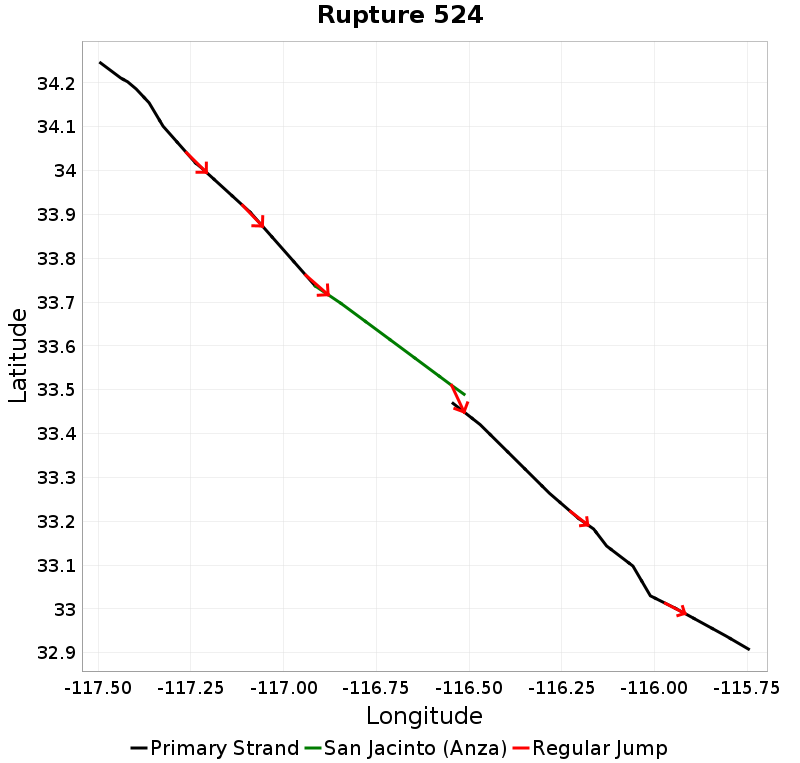

San Jacinto (Anza) Details
| Property | Value |
|---|---|
| Rupture Count | 395 |
| Magnitude Range | [6.48, 7.77] |
| Length Range | [15, 230] km |
| Total Rate | 0.010985417 /yr |
| Multi-Fault Rate | 0.003914632 /yr (35.63%) |
| Directly-Connected Faults | 3 |
| All Co-Rupturing Faults | 8 |
Table Of Contents
- Magnitude-Frequency Distribution
- Along-Strike Values
- Scalar Histograms & Example Ruptures
- Connectivity
Magnitude-Frequency Distribution
| Incremental | Cumulative |
|---|---|
Along-Strike Values
Scalar Histograms & Example Ruptures
Rupture Magnitude

| Minimum: 6.48 | p50: 7.49 | p90: 7.7 | p95: 7.72 |
|---|---|---|---|
 |  | ||
| p97.5: 7.74 | p99: 7.76 | p99.9: 7.77 | Maximum: 7.77 |
 |  |  | |
Rupture Length

| Minimum: 15.39 | p50: 120.22 | p90: 186.68 | p95: 203.64 |
|---|---|---|---|
 |  | ||
| p97.5: 215.64 | p99: 222.65 | p99.9: 229.93 | Maximum: 229.93 |
|  | | |
Cumulative Jump Dist
| Minimum: 0.0 | p50: 3.49 | p90: 3.49 | p95: 3.61 |
|---|---|---|---|
 |  | ||
| p97.5: 3.61 | p99: 3.61 | p99.9: 3.61 | Maximum: 3.61 |
 | | |
Connectivity
Nearby Sections
| Fault Section |
|---|
| San Jacinto (stepover), 0 km away |
| San Jacinto (Clark), 0 km away |
| San Jacinto (Coyote Creek), 3.49 km away |
San Jacinto (stepover), 0 km away
| slip_rate_inferred_gr_solution | |
|---|---|
| Connected? | true |
| Directly Connected? | true |
| Co-rupture Count | 270 |
| Co-rupture Rate | 0.0016509292 |
San Jacinto (Clark), 0 km away
| slip_rate_inferred_gr_solution | |
|---|---|
| Connected? | true |
| Directly Connected? | true |
| Co-rupture Count | 105 |
| Co-rupture Rate | 0.002511045 |
San Jacinto (Coyote Creek), 3.49 km away
| slip_rate_inferred_gr_solution | |
|---|---|
| Connected? | true |
| Directly Connected? | true |
| Co-rupture Count | 225 |
| Co-rupture Rate | 0.0010914775 |